[1]:
import warnings
warnings.filterwarnings("ignore")
import seaborn as sns
sns.set_context('paper',font_scale=1.5)
sns.set_style('ticks')
Overview#
defermi is a Python package for the calculation and analysis of point defect equilibria.DefectsAnalysis class, which handles a list of individual point defects calculations (DefectEntry objects).DataFrame object, a directory containing VASP calculations, or by creating DefectEntry objects manually. The minimal approach is to initialize the class with a DataFrame. Columns are:name: Name of the defect, naming conventions described below.charge: Defect charge.multiplicity: Multiplicity in the unit cell.energy_diff: Energy of the defective cell minus the energy of the pristine cell in eV.bulk_volume: Pristine cell volume in \(\mathrm{\AA^3}\)
Defect naming: (element = \(A\))
Vacancy:'Vac_A'(symbol=\(V_{A}\))Interstitial:'Int_A'(symbol=\(A_{i}\))Substitution:'Sub_B_on_A'(symbol=\(B_{A}\))Polaron:'Pol_A'(symbol=\({A}_{A}\))
Let’s create an example DataFrame with made-up energies as an example. We are studying \(SrO\) and have energies for the neutral and charged \(Sr\) and \(O\) vacancies.
[2]:
import pandas as pd
bulk_volume = 800 # cubic Amstrong
data_dict = [
{'name': 'Vac_O',
'charge': 2,
'multiplicity': 1,
'energy_diff': 7,
'bulk_volume': bulk_volume},
{'name': 'Vac_Sr',
'charge': -2,
'multiplicity': 1,
'energy_diff': 8,
'bulk_volume': bulk_volume},
{'name': 'Vac_O',
'charge':0,
'multiplicity':1,
'energy_diff': 10.8,
'bulk_volume': bulk_volume},
{'name': 'Vac_Sr',
'charge': 0,
'multiplicity': 1,
'energy_diff': 7.8,
'bulk_volume': bulk_volume},
]
df = pd.DataFrame(data_dict)
df
[2]:
| name | charge | multiplicity | energy_diff | bulk_volume | |
|---|---|---|---|---|---|
| 0 | Vac_O | 2 | 1 | 7.0 | 800 |
| 1 | Vac_Sr | -2 | 1 | 8.0 | 800 |
| 2 | Vac_O | 0 | 1 | 10.8 | 800 |
| 3 | Vac_Sr | 0 | 1 | 7.8 | 800 |
``DefectsAnalysis`` object
DefectsAnalysis object from the dataframe. Also importing from a file (pkl or csv) is possible.[3]:
from defermi import DefectsAnalysis
vbm = 0 # eV
band_gap = 2 # eV
da = DefectsAnalysis.from_dataframe(df,band_gap=band_gap,vbm=vbm)
da
[3]:
| name | delta atoms | charge | multiplicity | corrections | |
|---|---|---|---|---|---|
| 0 | Vac_O | {'O': -1} | 0 | 1 | {} |
| 1 | Vac_O | {'O': -1} | 2 | 1 | {} |
| 2 | Vac_Sr | {'Sr': -1} | -2 | 1 | {} |
| 3 | Vac_Sr | {'Sr': -1} | 0 | 1 | {} |
The DefectsAnalysis object is essentially a collection of DefectEntry objects and is subscriptable and iterable like a list:
[4]:
for entry in da:
print(entry.__repr__())
print('')
print(da[1])
DefectEntry: Name=Vac_O, Charge=0
DefectEntry: Name=Vac_O, Charge=2
DefectEntry: Name=Vac_Sr, Charge=-2
DefectEntry: Name=Vac_Sr, Charge=0
DefectEntry
Defect: Defect: type=Vacancy, species=O, charge=2
Energy: 7.0000
Corrections: 0.0000
Charge: 2.0
Multiplicity: 1
Data: []
Name: Vac_O
The object can be converted back to a DataFrame and exported as json, pickle or csv.
[5]:
# da.to_file?
da.to_dataframe()
[5]:
| name | charge | multiplicity | energy_diff | bulk_volume | |
|---|---|---|---|---|---|
| 0 | Vac_O | 0 | 1 | 10.8 | 800 |
| 1 | Vac_O | 2 | 1 | 7.0 | 800 |
| 2 | Vac_Sr | -2 | 1 | 8.0 | 800 |
| 3 | Vac_Sr | 0 | 1 | 7.8 | 800 |
Formation energies
plot_formation_energies function. To compute formation energies, we need to define the chemical potentials of the elements. They can be provided as a dictionary.[6]:
chempots = {'O': -5, 'Sr': -2} # made-up numbers in eV
plt = da.plot_formation_energies(chempots);
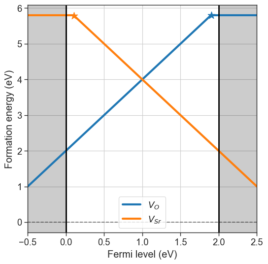
defermi also offers the possibility to pull the chemical potentials from the phase diagrams in the Materials Project database computed with density functional theory (GGA functionals).[7]:
plt = da.plot_formation_energies('SrO',figsize=(14,6));
plt.show()
# Chemical potentials are stored in the chempots attribute
da.chempots
Pulling chemical potentials from Materials Project database...
Chemical potentials:
Sr O
O-poor -1.689493 -11.102143
O-middle -4.535489 -8.256147
O-rich -7.381485 -5.410151
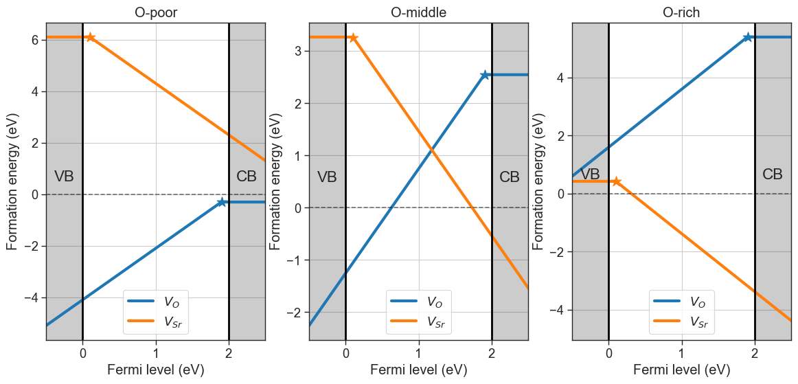
[7]:
| Sr | O | |
|---|---|---|
| O-poor | -1.689493 | -11.102143 |
| O-middle | -4.535489 | -8.256147 |
| O-rich | -7.381485 | -5.410151 |
Alternatively, we can provide the target phase and a condition ('rich','middle' or 'poor') to obtain only a specific set of chemical potentials.
[8]:
plt = da.plot_formation_energies(('SrO','O-middle'),figsize=(6,6));
plt.show()
Pulling chemical potentials from Materials Project database...
Chemical potentials for composition = SrO and condition = O-middle:
{'Sr': -4.535489, 'O': -8.256147}
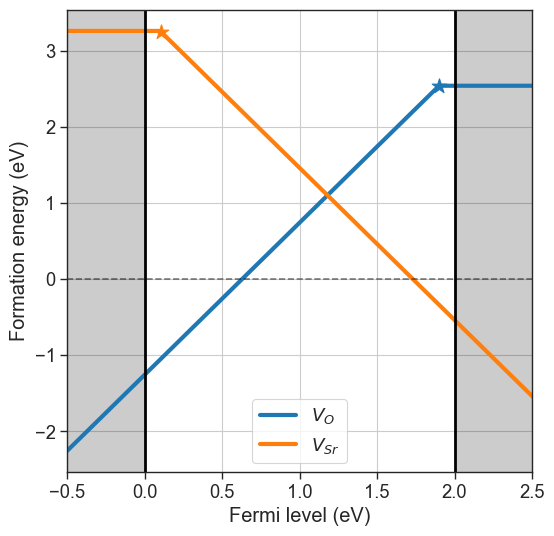
Charge transition levels
Charge transition levels are indipendent of chemical potentials and can be plotted separately.
[9]:
da.plot_ctl(figsize=(5,5));
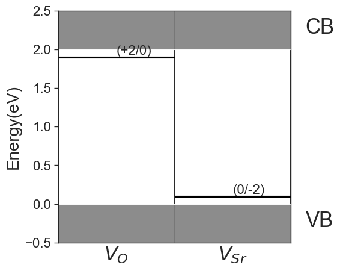
Fermi level dictated by charge neutrality
The defect concentrations in thermodynamic equilibrium is dictated by the position of the Fermi level (chemical potential of electrons), which in turn is determined by the charge neutrality condition (sum of all charges is zero). We can compute the equilibrium Fermi level with the solve_fermi_level method. We need also to provide either the effective masses of electrons and holes, or the density of states (DOS) of the pristine material for the integration of charge carriers. Defect
concentrations are computed with the defect_concentrations method.
[10]:
bulk_dos = {'m_eff_e': 0.5, 'm_eff_h': 0.4} # made-up effective masses
T = 1000 # Temperature = 1000 K
equilibrium_fermi_level = da.solve_fermi_level(chemical_potentials=chempots,bulk_dos=bulk_dos,temperature=T)
print(f'Fermi level dictated by charge neutrality: {equilibrium_fermi_level:.3f} eV \n')
# get equilibrium concentrations
equilibrium_concentrations = da.defect_concentrations(chemical_potentials=chempots,temperature=T,fermi_level=equilibrium_fermi_level)
print(f'Equilibrium defect concentrations in cm^-3:\n{equilibrium_concentrations}')
Fermi level dictated by charge neutrality: 0.986 eV
Equilibrium defect concentrations in cm^-3:
[charge=0.0, conc=7.35e-09, name=Vac_O
charge=2.0, conc=1.21e+01, name=Vac_O
charge=-2.0, conc=6.20e+00, name=Vac_Sr
charge=0.0, conc=7.35e-09, name=Vac_Sr]
Brouwer diagram
plot_brouwer_diagram method. The chemical potential of \(Sr\) in this case is determined by the energy of the pristine material \(SrO\). We need to provide also the value of \(\mu_O\) at \(0\) K and standard pressure \(p_0\). The results of the calculation are stored in the thermodata attribute.[11]:
# Pull data from Materials Project
precursors = 'SrO'
oxygen_ref = None
da.plot_brouwer_diagram(
bulk_dos=bulk_dos,
temperature=1000,
precursors=precursors,
oxygen_ref=oxygen_ref,
figsize=(6,6),
pressure_range=(1e-30,1e25));
Pulling precursors energies from Materials Project database
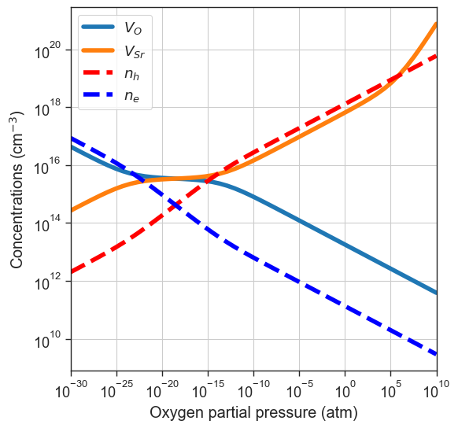
[12]:
#or providing the data ourselves
precursors = {'SrO':-10} # made-up energy per formula unit in eV of target material or synthesis precursors
oxygen_ref = -4.95 # eV - O reference chemical potential at 0 K and standard pressure, obtained with DFT (GGA)
da.plot_brouwer_diagram(
bulk_dos=bulk_dos,
temperature=1000,
precursors=precursors,
oxygen_ref=oxygen_ref,
figsize=(6,6),
pressure_range=(1e-30,1e25),
npoints=200);
# Plot equilibrium Fermi level position as a function of the oxygen partial pressure
from defermi.plotter import plot_pO2_vs_fermi_level
data = da.thermodata
equilibrium_data = data #store for later
plot_pO2_vs_fermi_level(
partial_pressures=data.partial_pressures,
fermi_levels=data.fermi_levels,
band_gap = da.band_gap,
figsize=(6,6),
xlim=(1e-30,1e20));
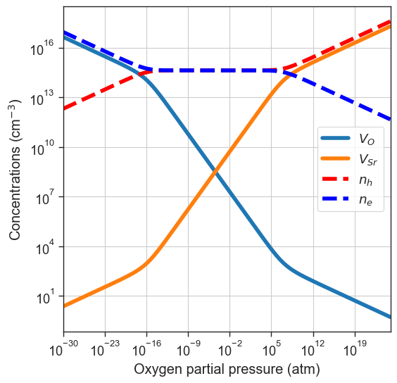
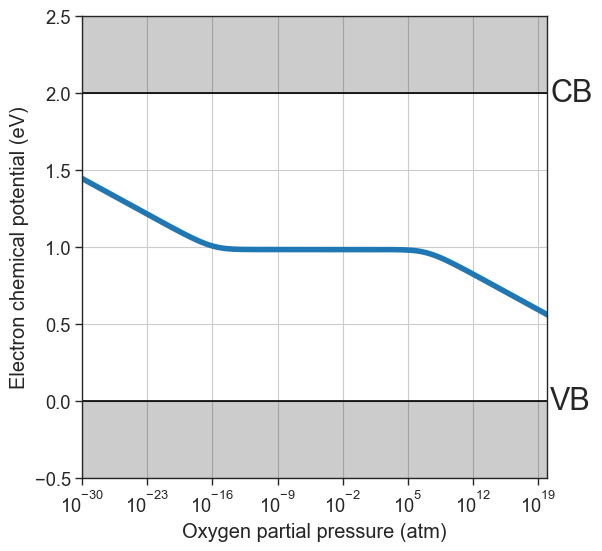
Customize plots
We can cutomize the plots by passing the arguments as kwargs to the plot_brouwer_diagram method, or by using the plotting functions individually:
[13]:
import matplotlib
from defermi.plotter import plot_pO2_vs_concentrations
xlim= (1e-30,1e20)
# Plot only Vac_O in all charge states
plt = plot_pO2_vs_concentrations(
thermodata=data,
output='all',
xlim=xlim,
name='Vac_O',
figsize=(6,6))
plt.title('$V_O$ in all charge states')
plt.show()
# Plot only most stable charge state
plt = plot_pO2_vs_concentrations(
thermodata=data,
output='stable',
xlim=xlim,
figsize=(6,6))
plt.title('Stable charge states');
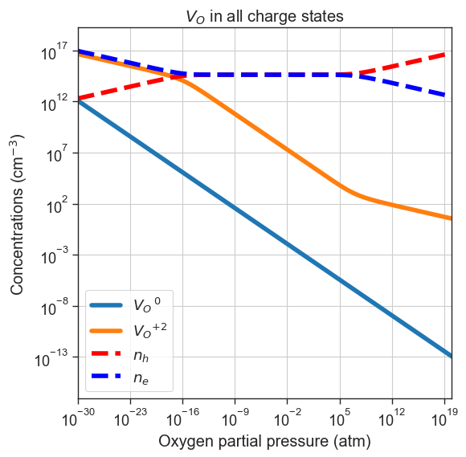
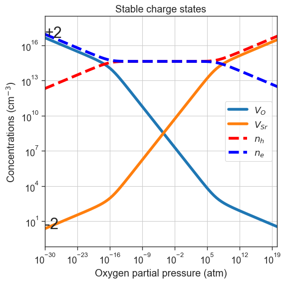
Extrinsic defects
We can also include external defects (not present in defect entries) to the calcualtion. Each additional defect is passed as a dictionary with keys:'name', 'charge', 'conc'. In this example we pass a defect called ‘Impurity’ with a charge of \(-1\) and a concentration of \(10^{15} \text{cm}^{-3}\).
[14]:
plt = da.plot_brouwer_diagram(
bulk_dos=bulk_dos,
temperature=1000,
external_defects = [{'name':'Impurity','charge':-1, 'conc':1e15}],
precursors=precursors,
oxygen_ref=-4.95,
figsize=(6,6),
pressure_range=(1e-30,1e20));
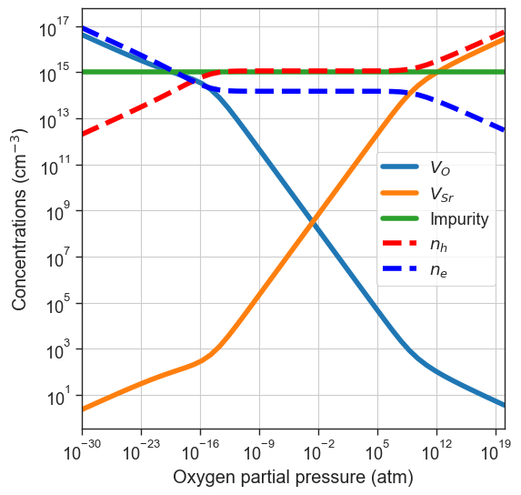
Doping diagrams
Substitution defect for example), the total concentration is fixed to a target value, but the charge states are determined by the relative formation energies. In this example, we’ll keep the acceptor used in the previous example.[15]:
plt = da.plot_doping_diagram(
variable_defect_specie={'name':'Impurity','charge':-1},
concentration_range=(1e11,1e20),
chemical_potentials=chempots,
bulk_dos=bulk_dos,
temperature=1000,
figsize=(6,6));
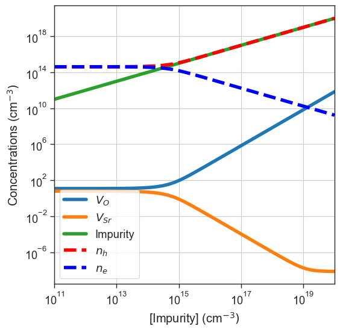
Defect quenching
quench_temperature in the function arguments.[16]:
plt = da.plot_brouwer_diagram(
bulk_dos=bulk_dos,
temperature=1000,
quench_temperature=300,
precursors=precursors,
oxygen_ref=-4.95,
figsize=(6,6),
pressure_range=(1e-30,1e20),
npoints=200);
plt.show()
quenched_data = da.thermodata
plot_pO2_vs_fermi_level(
partial_pressures=quenched_data.partial_pressures,
fermi_levels=quenched_data.fermi_levels,
band_gap = da.band_gap,
figsize=(6,6),
xlim=(1e-30,1e20));
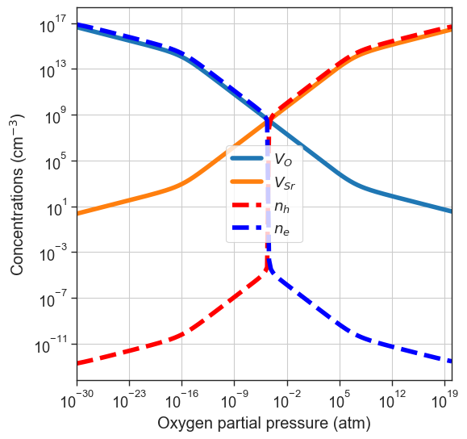
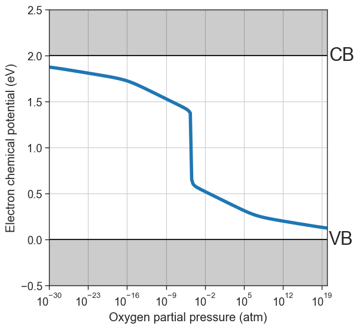
Partial quenching
If one ionic defect is particularly mobile, we can assume its concentration will be equilibrated at lower temperature. For this reason, we can also specify which defect species to quench. In this example we’ll consider \(V_O\) more mobile, therefore we only quench \(V_{Sr}\) by specifying quenched_species=['Vac_Sr'].
[17]:
plt = da.plot_brouwer_diagram(
bulk_dos=bulk_dos,
temperature=1000,
quench_temperature=300,
quenched_species=['Vac_Sr'],
precursors=precursors,
oxygen_ref=-4.95,
figsize=(6,6),
pressure_range=(1e-30,1e20),
npoints=200);
plt.show()
partial_quenched_data = da.thermodata
fermi_levels = {
'Equilibrium':equilibrium_data.fermi_levels,
'All quenched':quenched_data.fermi_levels,
'$V_{Sr}$ quenched':partial_quenched_data.fermi_levels
}
plot_pO2_vs_fermi_level(
partial_pressures=equilibrium_data.partial_pressures,
fermi_levels=fermi_levels,
band_gap = da.band_gap,
figsize=(6,6),
xlim=(1e-30,1e20));
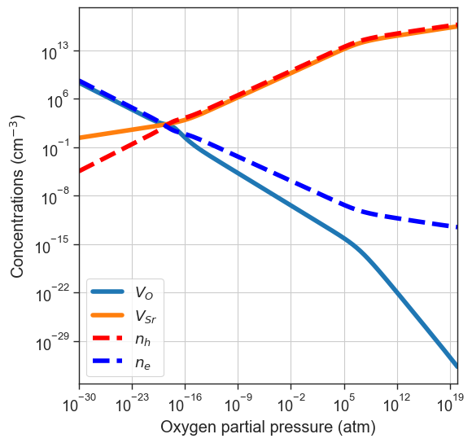
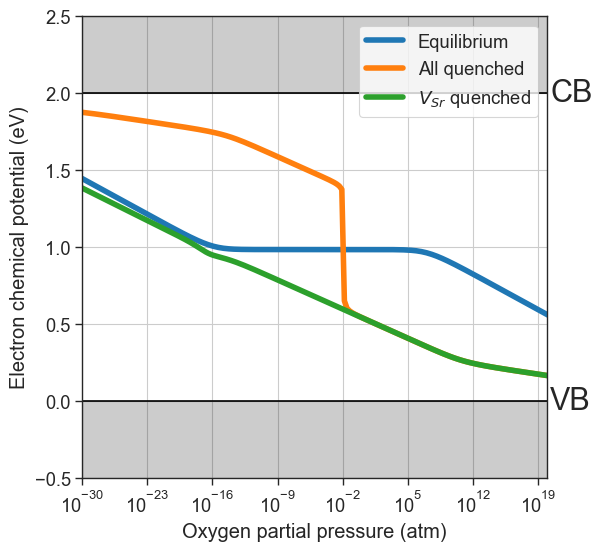
Custom formation energies and defect concentrations
defermi offers the possibility to customize the core functions DefectEntry.formation_energy and DefectEntry.defect_concentration. This is especially useful whenever we want to simulate conditions that deviate from the standard ideal solution model, like temperature-dependent formation energies, or anisotropic systems like interfaces and grain boundaries. For more detailed examples, refer to the tutorials on custom functions.![image.png]()
We can now define a function to compute the formation energy for this specific case. The function inputs need to be the same as the inputs of the default formation_energy function, plus the custom **kwargs:
entry:DefectEntryobjectvbmchemical_potentialsfermi_leveltemperature**kwargs
In this example, we compute the T-dependent formation energy as:
with:
For the formation energy at \(0 K\) use use the _default_formation_energy_function, but it could be programmed explicitely if needed.
[18]:
# T-dependent formation energy
def custom_formation_energy(
entry,
vbm=None,
chemical_potentials=None,
fermi_level=0,
temperature=0,
**kwargs):
formation_energy = entry._default_formation_energy(vbm=vbm,chemical_potentials=chemical_potentials,fermi_level=fermi_level)
if temperature < 500:
temperature_correction = - 1/1500 *temperature
else:
temperature_correction = - 1/700 *temperature
return formation_energy + temperature_correction
[19]:
import numpy as np
X = np.linspace(0,1000,100)
entry = da.select_entries(name='Vac_O',charge=2)[0]
Y = [custom_formation_energy(entry=entry,vbm=0,chemical_potentials=chempots,fermi_level=0,temperature=x) for x in X]
plt.figure(figsize=(4,4))
plt.plot(X,Y,lw=3)
plt.xlabel('Temperature (K)')
plt.ylabel('$\Delta E_f^{V_O}$ (eV)')
plt.xlim(0,1000);
plt.grid();
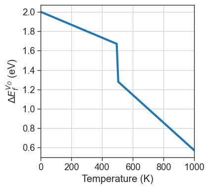
Once the function is defined, we can set the DefectEntry.formation_energy function for the desired defects to our custom function, using the set_formation_energy_functions method. Alternatively we can use directly DefectEntry.set_formation_energy_function for the individual entry.
[20]:
da.set_formation_energy_functions(function=custom_formation_energy,name='Vac_O')
# formation energies computed with custom function for Vac_O
da.plot_formation_energies(chempots,temperature=1000);
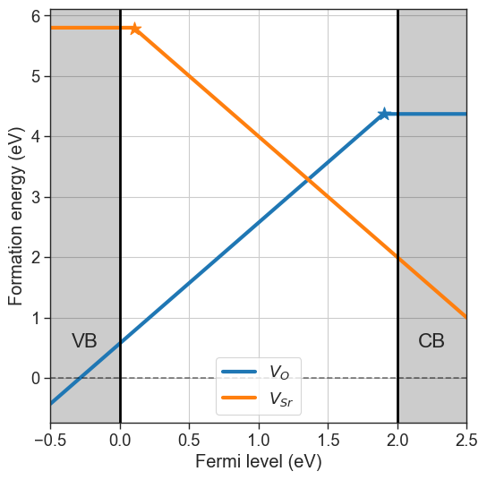
All subsequent calculations will call our custom function for the desired defect. The default behaviour can be reset with reset_formation_energy_functions.
[21]:
plt = da.plot_brouwer_diagram(
bulk_dos=bulk_dos,
temperature=1100,
precursors=precursors,
oxygen_ref=-4.95,
figsize=(6,6),
pressure_range=(1e-30,1e20),
npoints=200);
plt.show()
data = da.thermodata
plot_pO2_vs_fermi_level(
partial_pressures=data.partial_pressures,
fermi_levels=data.fermi_levels,
band_gap = da.band_gap,
figsize=(6,6),
xlim=(1e-30,1e20));
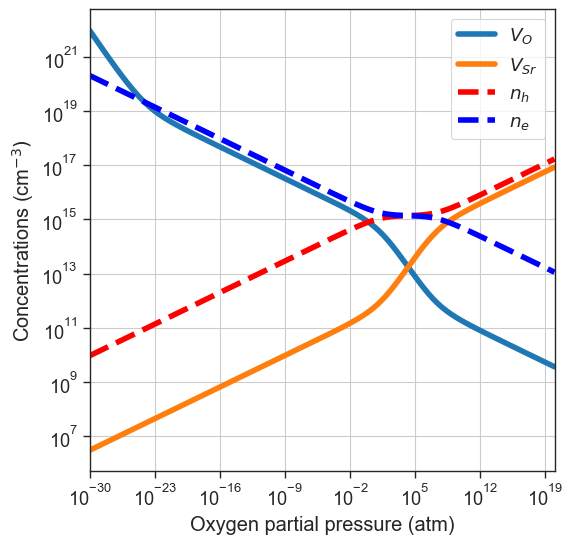
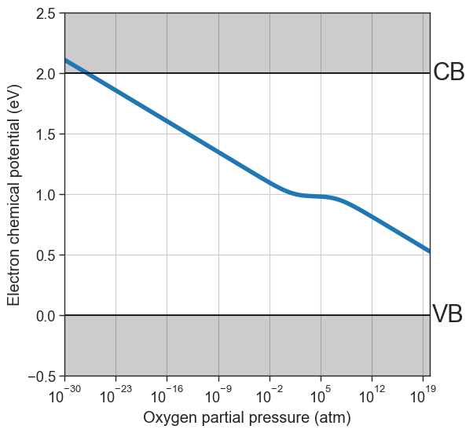